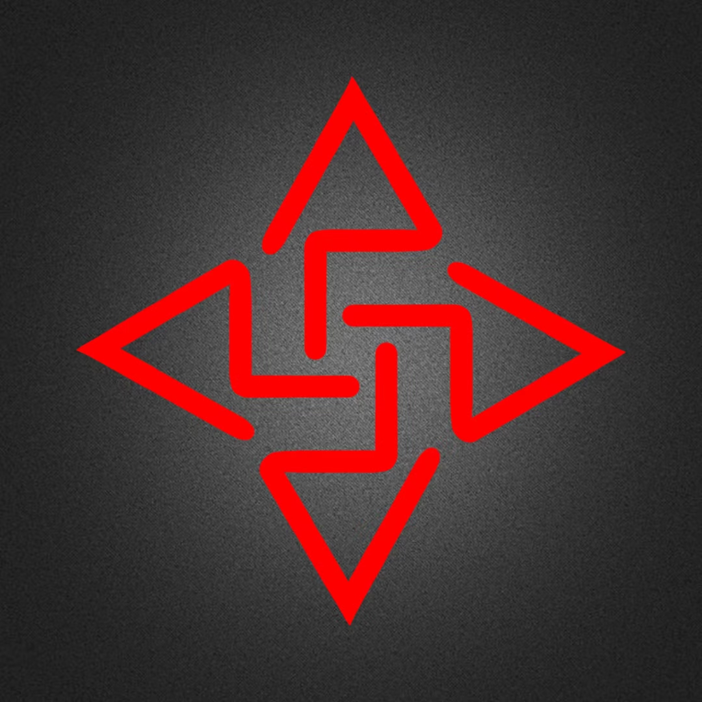

EXPERIMENT NO. 02VISUAL SIGNAL
NOT ONLY BUT ALSO
NOBA
不止如此。也可以是别的。
＋＋

＋＋N / 04 DIRECTIONS / ∞ POSSIBILITIES在秩序的边缘，留一点噪声。
MOVE YOUR CURSOR. FIND YOUR OWN FREQUENCY.
NOT ONLY BUT ALSO
不止如此。也可以是别的。

＋＋N / 04 DIRECTIONS / ∞ POSSIBILITIES在秩序的边缘，留一点噪声。
MOVE YOUR CURSOR. FIND YOUR OWN FREQUENCY.